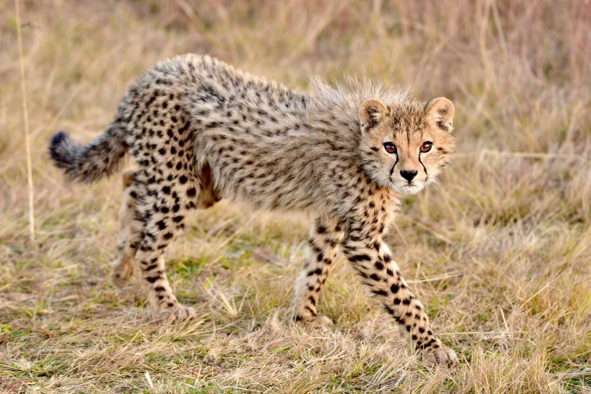

Koty w Europie
Europa to dom dla wielu różnych ras kotów. Większość kotów w Europie to koty domowe, ale istnieją także dzikie koty europejskie. W wielu krajach europejskich koty odgrywają ważną rolę jako towarzysze życia, zwłaszcza w miastach i wsiach, gdzie pomagają w walce z gryzoniami.
Kot Europejski
Kot europejski to jedna z najstarszych ras kotów. Charakteryzuje się silnym ciałem, krótką sierścią i dużymi oczami. To bardzo niezależny kot, ale jednocześnie przywiązany do swojego właściciela. Jest też doskonałym myśliwym.

Koty Domowe
W Europie koty domowe są bardzo popularne i stanowią świetne towarzystwo dla ludzi. Koty różnią się wielkością, kolorem sierści i charakterem, ale każda rasa ma coś wyjątkowego do zaoferowania. Najbardziej znane rasy to: brytyjski krótkowłosy, perski czy syjamski.

Koty na Świecie
Koty są obecne praktycznie na wszystkich kontynentach, a ich historia i popularność różnią się w zależności od regionu. W Ameryce Północnej i Południowej koty domowe są najczęściej wybieranymi zwierzętami, podczas gdy w Azji, szczególnie w krajach takich jak Japonia, koty mają specjalne miejsce w kulturze.
Koty w Azji
W Japonii koty są bardzo cenione, a nawet traktowane niemal jak członkowie rodziny. Koty są symbolem szczęścia, a wiele tradycji, jak np. Maneki Neko (kot z podniesioną łapką), jest znanych na całym świecie.

Koty w Afryce
W Afryce koty dzikie, takie jak koty stepowe, są bardzo rozpowszechnione. Koty domowe są również popularne, zwłaszcza w miastach, gdzie pełnią rolę strażników przed gryzoniami. W niektórych rejonach Afryki koty są także uważane za symbole ochrony.

Dzikie Koty
Na całym świecie żyje wiele dzikich gatunków kotów. W Europie jest to m.in. kot europejski dziki, który zamieszkuje lasy i obszary górskie. W Afryce żyje wiele dzikich kotów, takich jak gepardy, lwy i pantery. Te dzikie koty różnią się od kotów domowych, ale wszystkie mają podobne cechy, jak świetny wzrok, doskonały zmysł słuchu i szybki refleks.
Kot Europejski Dzik
Kot europejski dziki to tajemniczy i nieuchwytny gatunek, który występuje w lasach Europy. Jest znacznie większy od kota domowego i ma grubsze futro. Żywi się głównie drobnymi ssakami i ptakami.

Gepard
Gepard to najszybsze zwierzę lądowe, zdolne osiągnąć prędkość nawet 100 km/h. Żyje głównie w Afryce, gdzie poluje na gazele i inne szybkie zwierzęta. Jest symbolem szybkości i siły w królestwie kotów.
